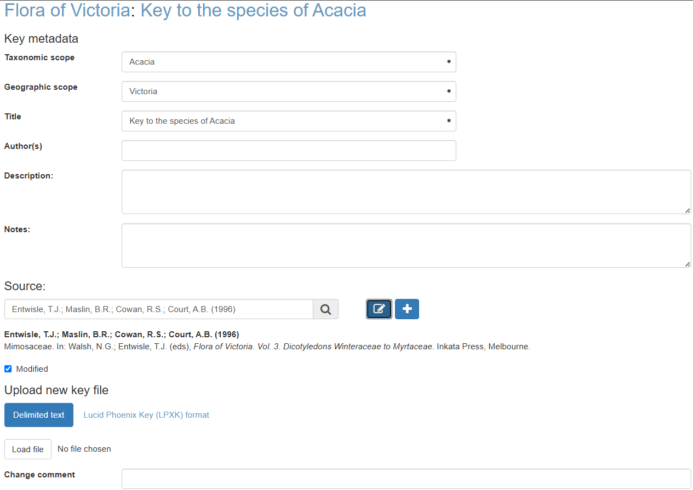

KeyBase redevelopment
KeyBase is an application that makes traditional dichotomous identification keys suitable for use on the web and that people can use to manage keys for use in other applications. It has also been used by many people to create stand-alone projects that live entirely within KeyBase. The mission of KeyBase, however, is to make pathway keys on the web and nothing else, so KeyBase will never include profiles, or images, or references, which are jobs for other services.
KeyBase has been managed by the Royal Botanic Gardens Victoria since 2011.
KeyBase has a plugin that people can use in their own applications that provides keys in the form of an interactive key player, a bracketed key and an indented key. Applications that use the plugin can choose which type of keys they want to run. VicFlora, for example, only uses the interactive player and the bracketed key. It also offers the option to filter items in a key, that applications can choose to implement or not (VicFlora does not use it).
KeyBase does not currently have an editor, but people have always been able to upload keys as CSV files. The homepage being defaced by a hacker in December 2023, however, forced us to turn off this functionality.
The aim of the current redevelopment is to convert KeyBase from a proof-of-concept to a production-ready web application. The main focus will be on securing the application, so that we can make the upload functionality available again. In the process, we will also modernise the application and bring it in line with modern web architecture and design. We’ll also make sure that KeyBase can be maintained by developers that do not have to know KeyBase inside-out so that we do not again end up with ten years of technical debt.
The KeyBase plugin is also old, but it is working fine, so upgrading that will be left for a next phase.
Current codebase
The code for the current iteration of KeyBase is in the following GitHub repositories:
Application: https://github.com/rbgvictoria/keybase
API: https://github.com/rbgvictoria/keybase-ws
The code for the KeyBase plugin, which is the only bit I had thought we’d leave intact for now, is at https://github.com/rbgvictoria/keybase/blob/master/js/jquery.keybase.key.js. This needs to be changed to vanilla Javascript though before we do the redevelopment of VicFlora next (financial) year. @twocngdagz, please make a judgement whether we should replace it as part of this project, or whether we should postpone it. If we are going to do it now, there are some changes I would like to make.
Licensing
We have agreed to share the copyright for all the code between Fast Flow Management (FFM) and the Royal Botanic Gardens Victoria (RBGV). We’ll find an appropriate Open Source licence to put on all the code.
Architecture
We have decided on an architecture of Laravel + Inertia + React.
KeyBase will have a REST-like API for GET requests, like it has now. In fact, this API will change very little, as the KeyBase plugin requires JSON with a very specific structure.
CSS framework
We will change the CSS framework from Bootstrap to Tailwind CSS, because Tailwind works better with modern Javascript frameworks. This might change the look and feel of the site, which is very bootstrappy at the moment.
API
The current API is documented at https://keybase.rbg.vic.gov.au/api. We cannot change too much to the API, because the plugin relies on a certain structure of the JSO output for the keys and the Atlas of Living Australia (ALA) uses the project endpoints for the Flora of Australia project in their Profiles.
Currently everything in KeyBase goes through the API. Because of our use of Inertia, this is not really necessary in the new version but, if it is not too much extra work, I would like to keep it this way.
I will set up the the database structure and the public API endpoints myself once the GitHub repository has been created.
Authentication
Authentication to KeyBase will be with ORCID. ORCID has been chosen, because it is the only identifier we can require all KeyBase users to have. If we let people log in using their ORCID, people will not be able to give fake email addresses etc. The ORCID API also provides Multi-Factor Authentication.
More information at https://info.orcid.org/what-is-orcid/services/public-api/orcid-as-a-sign-in-option-to-your-system/.
I would like to have the complete OAuth2 workflow (so Laravel Passport rather than Laravel Sanctum), so other developers can build their own applications around the KeyBase service or fully integrate KeyBase into their applications.
Authorization
KeyBase consists of many projects. Users of a project can have one of two roles, Manager or Contributor. Contributors can create, update and delete their own keys, while Managers can do the same for all keys in a project. Managers can also edit the project’s metadata, manage a project’s items separately from the keys (this entails adding links to other websites), manage filters, and assign other users to a project.
There should also be an Administrator role. Administrators can do everything in KeyBase, including deleting inactive projects with no keys.
Project page
The project page has got four tabs: Keys (tree), Keys (list), About and Contributors. Logged in users also get a Filters tab and Managers of a project also get an Items tab.

-
The content of the Keys tabs comes from the
/project_keys_get/{projectId}endpoint. -
The Keys (tree) tab shows the keys in a tree structure (the output of the
/project_keys_getendpoint contains an adjacency list). This tree is currently created using Dynatree (https://github.com/mar10/dynatree). This is a JQuery library, so needs to be replaced with something vanilla Javascipt or React. -
The Keys (list) is just an alphabetical list of the keys.
-
The About page is populated by the output of the
/project_meta_get/{projectId}endpoint. It is just the description of the project. We might see if we can put it somewhere more prominent. -
The Contributors page lists the users in the project and their roles. I do not know where the data comes from but in the new API it will be added to the
projects/{id}endpoint. -
The Items tab currently only has an ‘Upload project items’ button that project Managers can use to upload a CSV file with item labels and links. We can put a table there that is viewable by everyone and editable by project Managers.
-
VicFlora updates project items every night but does so directly into the database. We should have an API endpoint for that.
-
The Filters tab currently only has a ‘Create new filter’ button that sends people to the
/filterspage. We can drag the whole content of that page into the Filter tab, as KeyBase is not going to have filters across projects. -
The search box on the left replicates the functionality of the browser search (CTRL + F). It needs an autocorrect that will get its data from the
project_keys_getAPI endpoint, like the first two tabs.
Key page

Interactive key, Bracketed key and Indented key tabs
-
The Interactive key, Bracketed key and Indented key are all created by the KeyBase plugin, but some Javascript is required to start it up. I have done this in VicFlora (https://github.com/vicflora/vicflora-vue/tree/main/components/Keybase), but that is in VueJS, so will be slightly different from what we need here.
-
The KeyBase plugin has got hooks for CSS classes, so we can put Tailwind CSS classes in there.
-
There are hooks for other customisations to the interface as well, but the thing as made for KeyBase, so KeyBase mostly uses the defaults. We could use it to make a responsive interactive key player though.
About tab
- The About tab contains the keys metadata:
-
It also contains a list of the items that key out in a key (in the Items tab) and gives access to the exports and the Edit page (for new keys the Edit page is accessed from the Project page).
-
KeyBase exports currently come in five formats: CSV, TXT (tab-separated values), LPXK (Lucid Phoenix Key format) SDD (Structured Descriptive Data format) and KeyBase’s own format, which is in JSON. We can ditch LPXK and SDD, as there are no applications that use these formats anymore.

Edit key

-
All metadata fields are shown in the screenshot above.
-
We will stop supporting the LPXK format anymore, so all uploaded keys will be in CSV/TXT format. KeyBase will recognise the format. We also need to recognise the encoding, as many people edit keys in Excel.
-
The form to provide the Source of the key is currently in a modal. I think it would be nicer to have it in a collapsible form section.

- When uploading a new key file, you first get a screen to confirm if KeyBase picked the right separator:

- The next screen shows the result of the tests whether all the leads in the key have been correctly linked up:
(I broke this one on purpose)
-
If there are any errors in the key, the ‘OK’ button is disabled, so people need to get back to the CSV file, fix the errors and re-upload it. Warnings can be ignored, but users do so at their own peril. Keys with reticulations (multiple leads that lead to the same couplet), for example, will not be editable if KeyBase ever gets a key editor.
-
If there are no errors or warnings, this screen will not show and the key will be loaded.
-
We discussed editable tables before and this would be a good place for one, as mostly these errors are easily fixed.
Search
- The Search box at the top of the page searches for keys across projects.
- The Search box needs an autocomplete. There is an endpoint in the API for this (currently
/autocomplete_item_name).
Filters
-
KeyBase has two types of filters, Local filters and Global filters.
-
Local Filters are fully embedded in the KeyBase plugin, so nothing special needs to be done for them.

- Global filters are managed on the Filters page. Only logged-in users have access to that, because global filters are stored in the database.

-
A Global filter is basically a list of taxa (Items in KeyBase). KeyBase only stores these items and only when the filter is applied looks for the keys the items are in and other keys that need to be traversed to get to these keys.
-
There are two types of global filters, ““User filters** (indicated as My filters) that every user and only they can see and Project filters that only project Managers can make but that everybody can see.
-
As the global filters are not really global anymore but apply to a single project, I would like to see if we can get rid of the Filter page and put it in the Filter tab on the Project page.